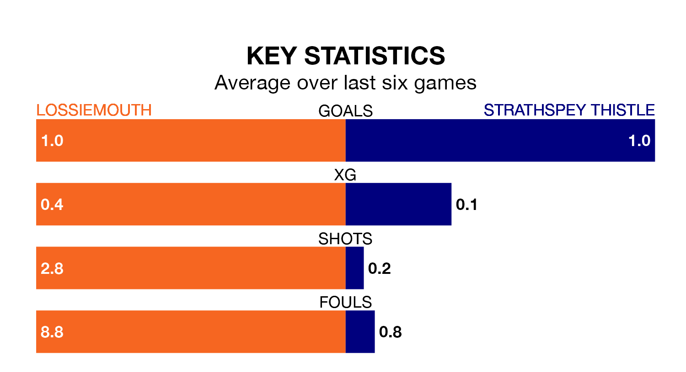

Lossiemouth and Strathspey Thistle both come into Saturday's kick-off at Grant Park in poor form, having picked up three and one points respectively in their last six games.
Lossiemouth have won just one of the last six, while Strathspey Thistle have taken just one draw.
Strathspey Thistle are bottom of the table after 20 games, of which they have won two and drawn one, earning seven points.
Lossiemouth are five places ahead of the visitors in 13th, with five wins and three draws putting them on 18 points.
In the last 10 years, Lossiemouth and Strathspey Thistle have played each other on 14 occasions. Lossiemouth won 10 of them and Strathspey Thistle four.
On average, Lossiemouth scored 2.7 goals and Strathspey Thistle 1.6 in those matches.
Their last meeting was on October 28, when Lossiemouth won 3-0 away.
With 24 goals in 21 games so far this season, the home side are scoring at below the league average rate with 1.1 goals per game. And they are conceding more than average, letting in 43 goals at a rate of 2.0 per game.
Strathspey Thistle are also below average scorers, with 1.1 goals per game, compared to a league average of 1.9. They have conceded 3.6 goals per game.
Lossiemouth's last match was on February 3, a 2-0 loss against Brechin City.
Strathspey Thistle lost 3-2 against Wick Academy last time out, also on February 3.
Updated: 11:18 (UTC), 08/02/24